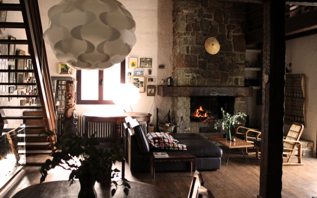
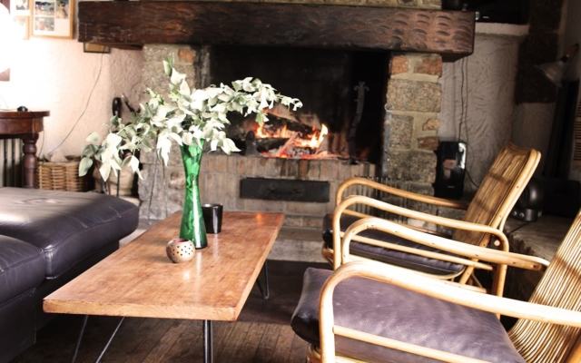
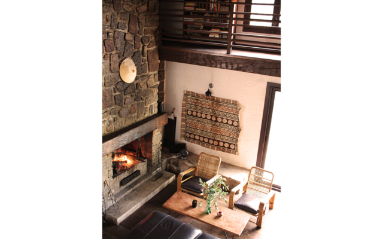
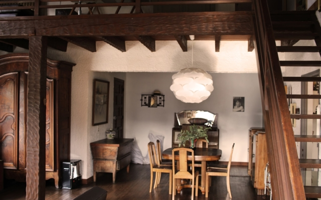
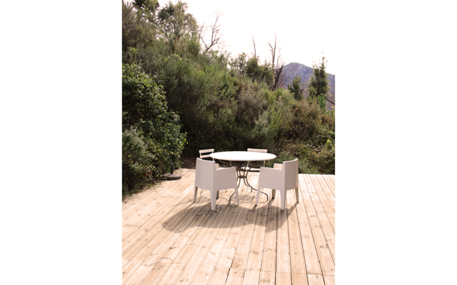

Pour des séjours plus courts, dans le but de faire de nouvelles rencontres ou simplement pour profiter des petits déjeuners aux couleurs locales, venez découvrir notre service de chambres d’hôtes. Ces dernières sont situées au 1ᵉʳ étage de notre maison familiale, au sein de l’appartement A Casa Maiò disposant de 200 m² d’espace habitable, de quoi ne pas vous sentir à l’étroit.
Trois chambres doubles sont disponibles, disposant d’une spacieuse salle d’eau commune et de terrasses privatives. A Casa Maio mêle lieux partagés et espaces intimes, afin que vous puissiez profiter du calme des montagnes tout en partageant des moments conviviaux. Le point central de la maison est son immense salon, tout vêtu de bois massif et disposant d’une cheminée. Depuis cette pièce pleine de charme vous pourrez admirer le sublime golfe de Porto et ses couchers de soleil aux mille couleurs. Vous aurez également accès au jardin, aux terrasses communes ainsi qu’à la piscine, qui sauront vous offrir un espace de détente en pleine nature.
Les petits-déjeuners sont compris et vous permettront de découvrir des spécialités culinaires locales et faites maison.
Les informations pratiques : Des draps de lit et de bain sont fournis sur place et des emplacements voiture sont à disposition dans la propriété.
A Casa Maìo
UN LIEU CONVIVIAL ET AUTHENTIQUE AU COEUR DU MAQUIS.






